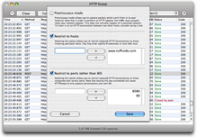

| Inhaltsverzeichnis |
|
 |
Der Einstellungsdialog (erreichbar über das HTTPScoop-Menü wenn keine Aufzeichnung im Gange ist) erlaubt Ihnen festzulegen, welche Daten Sie aufzeichnen wollen. Diese Einstellungen werden in Ihren Benutzereinstellungen gespeichert, deshalb denken Sie bitte daran, das diese beim nächsten Start von HTTPScoop immernoch aktiv sind. Einstellungen: |
Promiscuous Mode |
|---|
|
Der Promiscuous Mode erlaubt das Aufzeichnen von Paketen die nicht für Ihren bzw. von Ihrem Rechner sind. Dies kann hilfreich sein, wenn weder der Server noch der Client mit OS X laufen. Es kann außerdem bei Produktivsystemen oder Testumgebungen hilfreich sein, bei denen Sie das Verhalten eines Servers gegenüber vielen verschiedenen Clients an Ort und Stelle beobachten wollen. Beachten Sie, dass der Datenverkehr Ihren Netzwerkadapter erreichen muss um eine HTTP-Aufzeichnung durchzuführen. In einem geswitchten Netzwerk ist dies normalerweise nicht der Fall. Eine Lösung dafür ist der Einsatz eines Hubs an den Sie Ihren Computer und ebenfalls den Server oder Client anschließen. Hubs sind billige Geräte die jeglichen Datenverkehr von jedem Port an jeden anderen Port weiterleiten. Manche Switches können so konfiguriert werden, dass Sie das Verhalten eines Hubs zu nachahmen. Sie können auch Kommunikation die über ein unverschlüsseltes Funknetzwerk (W-LAN) stattfindet aufzeichnen, dies funktioniert aber nicht mit allen W-LAN-Routern. Bitte wenden Sie sich an support@tuffcode.com um Konfigurationen zu melden, bei denen dies nicht funktioniert. Zum Abschluß noch eine Warnung: Die Nutzung des Promiscuous Modes kann eine Verletzung der Privatsphäre darstellen. Bitte denken Sie daran, dass die Nutzung des Promiscuous Modes erkannt werden kann (und meist unerwünscht ist), wenn Sie ihren Netzwerkadapter in diesen Modus schalten. Fragen Sie immer Ihren Netzwerkadministrator um Erlaubnis, bevor Sie dies machen. |
Beschränke auf Rechner |
|---|
|
Diese Option erlaubt Ihnen, nur HTTP-Kommunikation aufzuzeichnen, an der bestimmte Rechner beteiligt sind. Dies erhöht die Übersichtlichkeit und ist außerdem ein Weg die Meldung "Datenverkehr zu schnell - einige Pakete verloren" zu vermeiden - lesen Sie dazu auch Problemlösung - da es dem Betriebssystem ermöglicht nicht benötigte Pakete schnell zu verwerfen. Sie können Rechnernamen wie z.B: www.tuffcode.com angeben oder IP-Adressen. Dies kann einige unerwartete Nebeneffekte haben - für nähere Informationen darüber lesen Sie den Abschnitt "TODO" des Kapitels Problemlösung. |
Beschränke auf Ports |
|---|
|
Standardmäßig zeichnet HTTPScoop nur Kommunikation auf, die über Port 80 stattfindet. Sie können hier andere Ports angeben, um darauf aufzeichnen zu lassen. Vergessen Sie nicht auch Port 80 hinzuzufügen, wenn Sie zusätzlich auch auf anderen Ports aufzeichnen möchten. |